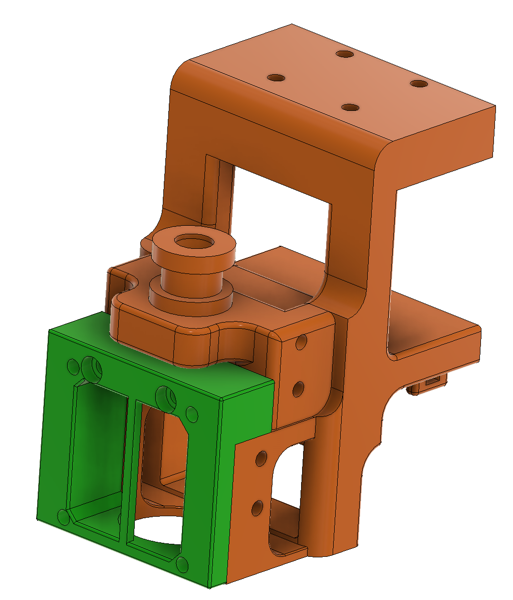
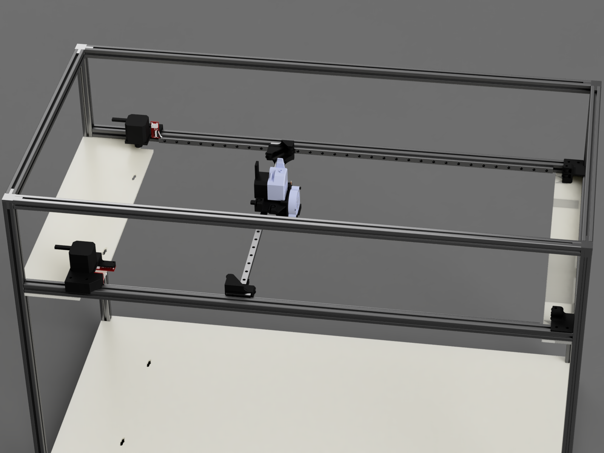

Folgertech FT6 Upgrades
Hotend Replacement
Almost immediately after initially building the printer, the hotend failed. Even before the failure the extruder kept skipping and the hotend wouldn't expel material smoothly. I decided it was time for an upgrade rather than a simple repair. On the market there were several options but I decided to stick with a genuine part and stay away from copies. My options were bondtech bmg with an e3d hotend or an e3d titan aero. I did not have good experiences with the e3d titan aero on my smaller i3 style printer so I decided to go with the bmg and e3d pairing. Given that the printer is gigantic, I went for the e3d volcano hotend which advertises the ability to print at a higher rate than a normal v6.
With this combination I had to figure out a new way to mount the hotend to the printer. Initially I tried to run the volcano in bowden mode with the extruder mounted on the frame, but I couldn't get the volcano to stop oozing in this configuration. When I decided to move to direct drive I had to design my own carriage mount as my current one did not have the option for direct mounting of the extruder.

It is designed to bolt up to the stock belt carrier while providing an optional accessory mounting for either a dial gauge or a bltouch. The main feature of the mount is the compatibility with a petsfang cooler which I wanted to keep since I didn't want to design a new cooler and go through the air flow analysis.
It has been awhile since I designed this mount and it has served well, it had a couple of dimensional issues that were close so I just sanded away the extra material. It was still a tight fit but I eventually got it together. Since it was together I didn't fiddle with it until I decided to rework it.
For the replacement I wanted a few features:
- Lighter weight
- More rigid
- BLTouch mount
- Maximizes space for printing
- Simplistic cooler
Along with the hotend rebuild I decided I wanted to massively reduce the weight of the movement axis and to do this I went CoreXY.
CoreXY Conversion
After finally getting tired of the quirks of the Volcano I have decided to upgrade the hotend and the motion system on the Folgertech FT6. I am moving to a CoreXY motion system while also moving to the TriangleLabs Dragon hotend with a pancake stepper from LDO. In the process of moving to the CoreXY motion system I am also moving to using a couple beefy 0.9 degree steppers from LDO.
The reason for switching to the CoreXY:
- Weight reduction — dropping about 600 grams from the moving axis between ditching the extrusion, the large extruder motor, the axis motor, and the large carriage mount.
- Moving to a motion system that required fewer motors so I could run more expensive steppers.
- Joy of designing something new — with the stay-at-home order I welcomed the challenge.
Design

Key constraints I identified for a CoreXY system:
- Belts must be parallel along the rails
- Idler mounts must be very rigid
- Between the two options I went for a two level setup rather than crossing the belts
I reconstructed the main parts of the printer in Fusion 360 and used that to size all of the parts and build the belt geometry. This gives an accurate estimation of assembly — this method was very useful because while the printer is being upgraded, I can't print any new parts.
As part of the redesign I wanted to reduce ghosting while maintaining print speed. Sources of ghosting in the current setup: jerk of the motion system combined with the weight of the moving axis, and an x-axis pulley that is not perfectly round. Weight reduction measures: removing the extrusion, swapping the extruded stepper to a slim stepper, and removing the y-axis motor.
The extrusion inclusion was questionable — according to the simply supported beam formula the maximum deflection is approximately 2.44×10⁻⁵ mm:
$$ \delta_{max} = \frac{FL^3}{48EI}$$
Material specifications:
- $E = 200\ \text{GPa}$
- $I = bh^3/12$
- Total moving mass: BLTouch (10 g) + BMG (198 g) + Stepper (150 g) + Cooler mount (9 g) + Mount (46 g) = 413 g / 4.05 N
Parts List
| Name | Part Number | Price | Qty | Source |
|---|---|---|---|---|
| Extruder Motor | LDO-42STH25-1404MAC | $16.99 | 1 | Filastruder |
| Motion Motor | LDO-42STH25-1404MAC | $16.99 | 2 | Filastruder |
| Gates Belt | Gates-LL-2GT 6M | $17.67 | 1 | Aliexpress |
| Trianglelab BLTouch | BLTouch | $13.66 | 1 | Aliexpress |
| Trianglelab Pulleys | 2GT 20 teeth ×5 | $6.99 | 1 | Aliexpress |